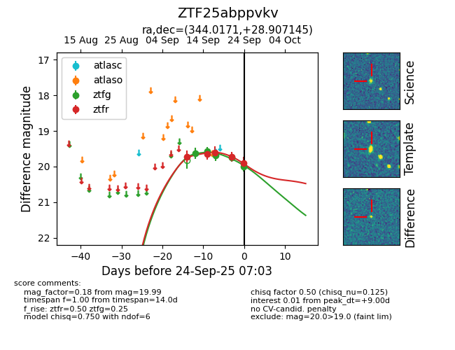
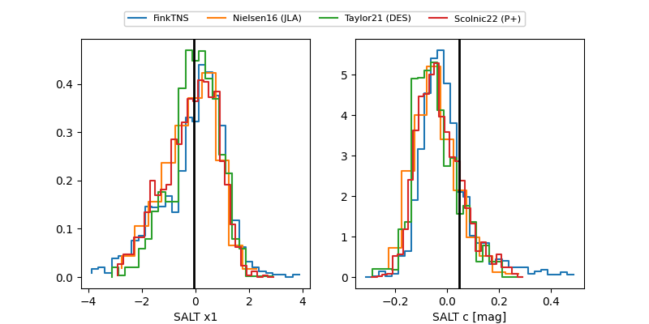

FINK: ZTF25abppvkv
Lasair: ZTF25abppvkv
ALeRCE: ZTF25abppvkv
ZTF25abppvkv (ztf,fink)
equatorial (ra, dec) = (344.0171,+28.90714)
galactic (l, b) = (94.4964,-27.51841)


last ztfg=19.99, ztfr=19.90
5 ztfg, 5 ztfr detections